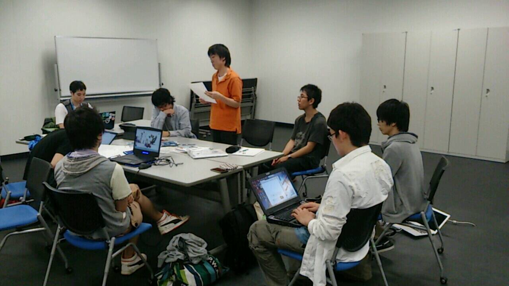

<div>
	<h2>iBeaconアイディアソン-　小笠原（学部生）</h2>
	<div>
		内容：O2Oで注目されるiBeaconの概要を説明後、有効な使い方を模索。<br />
		<br />
		下記が今回の簡単な資料となります。<br />
		資料：<a href="http://prezi.com/dwsyexv9bexr/ibeacon/" title="iBeacon概要">http://prezi.com/dwsyexv9bexr/ibeacon/</a><br />
		<br />
		参加者それぞれの得意分野からみた活用方法を模索していき、ブレインストーミングを行いました。<br />
		ブレスト中も大変盛り上がり、沢山の意見が揃い、発展させる事が出来ました。<br />
		興味を刺激出来た点でも、素晴らしいアイディアソンになったと思います。<br />
		<br clear="left"/>

		<br />
	</div>
</div>